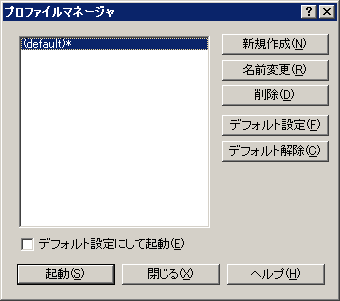

プロファイルマネージャ
プロファイルマネージャを表示します。
マルチプロファイル機能は、サクラエディタの設定を複数使い分けることができるようになるものです。
各設定は、設定フォルダ(従来のsakura.iniがおかれているフォルダ)にプロファイル名のサブフォルダを作成し、
それぞれのサブフォルダ内に各設定ファイル・sakura.ini・マクロ・プラグインを置くことができます。
従来の設定フォルダにじかにおかれているsakura.iniは「(default)」と表示されます。
プロファイルマネージャの設定は、設定フォルダの[実行ファイル名]_prof.iniに書き込まれます。
(プロファイル名一覧)
プロファイルマネージャに登録されたプロファイル名の一覧です。
*が付いているものは、コマンドラインで-PROF=未指定時のデフォルト起動のプロファイルです。
実際に存在するプロファイル一覧とここに表示される一覧は異なることがあります。
[新規作成]
新しくプロファイル一覧に名前を登録します。サブフォルダの実体は作成しません。
[名前変更]
現在一覧で選択されているプロファイル名の名前を変更します。サブフォルダの実体がある場合、フォルダの名前の変更も行います。
[削除]
現在一覧で選択されているプロファイル名の名前を削除します。サブフォルダの実体は削除しません。
[デフォルト設定]
現在一覧で選択されているプロファイル名をデフォルト起動のプロファイルに設定します。
[デフォルト解除]
デフォルト起動のプロファイルの設定を解除します。デフォルト起動の指定がなく、-PROFも未指定の場合、プログラム開始時にプロファイルマネージャが表示されます。
□デフォルト設定にして起動
[起動]ボタンを押したとき、現在一覧で選択されているプロファイル名をデフォルト設定にします。
[起動]
エディタ上からマネージャを表示した場合は、新規プロセスを開始します。
サクラエディタ起動時に表示されるマネージャの場合は、現在のプロセスを選択したプロファイルで開始します。
[閉じる]
エディタ上からマネージャを表示した場合は、マネージャ画面を閉じます。
サクラエディタ起動時に表示されるマネージャの場合は、マネージャ画面を閉じてプロセスを終了します。
[ヘルプ]
ヘルプを表示します。

■マクロ構文
マクロから直接利用することはできません
コマンドラインオプションで、起動時にプロファイルマネージャを表示できます。
ExecCommandと組み合わせればマクロから画面を呼び出すことができます。
ExpandParameter("$<profile>"); で、現在のプロファイル名を取得できます。